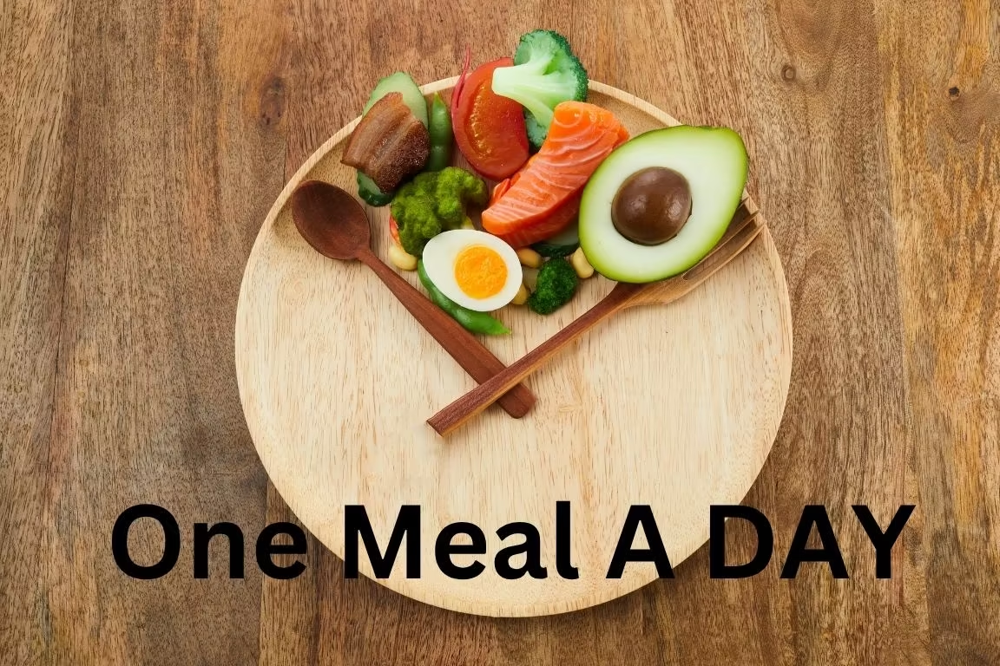

I have a theory that every fasting protocol sounds easy until you actually try it. OMAD sounded easy. One meal a day. Just eat once and be done with it. No tracking windows, no counting hours, no worrying about when to stop eating. Just one meal. I thought it would simplify my life. I was so wrong.
The idea came from a friend who had been doing OMAD for six months. He looked lean, he had endless energy, and he never seemed to think about food. I asked him how he did it. He said, “You just eat once a day. You get used to it.” That sounded simple enough. So I decided to try it for 14 days. I chose 2 PM as my meal time because it worked with my work schedule. I would eat a big, satisfying meal, and then nothing until the next day.
Day one was a breeze. I had my meal at 2 PM, felt full, and didn’t think about food again until the next morning. I thought I had cracked the code.
Day two was harder. I woke up hungry. Not the normal kind of hungry, but the kind that makes you feel like you haven’t eaten in days. I drank water. I drank coffee. I distracted myself with work. By 11 AM, I was watching the clock, waiting for 2 PM to arrive. When it finally did, I ate my meal so fast that I barely tasted it. I felt full, but I also felt like I had failed somehow. OMAD wasn’t supposed to be about survival. It was supposed to be about freedom.
Day three was the turning point. I realized that OMAD wasn’t just about eating once a day. It was about eating once a day and still being functional. I needed to make my one meal count. I needed protein, fat, fiber, and enough volume to keep me going. I started planning my meal the night before. I made sure it had at least 40 grams of protein and a lot of vegetables. That made a difference. I wasn’t as hungry the next morning.
But the hunger wasn’t the worst part. The worst part was my social life. Austin is a food city. People don’t just eat here. They gather around food. Brunch on Sundays, tacos on Tuesdays, happy hour on Fridays, food trucks at the park on Saturdays. Every social event involves food. And when you’re doing OMAD, you can’t just eat a snack or have a drink. Everything counts. Every bite breaks your fast.
The first weekend of my experiment, I had to turn down brunch with my friends. I told them I was doing a fasting thing and would meet them afterward. They gave me a weird look but didn’t push it. The next weekend, I had to skip a dinner party because the timing didn’t work. My friends started asking questions. Are you okay? Are you sick? Is this an eating disorder thing? I had to explain OMAD to about five different people. Most of them didn’t get it.
The hardest part was not being able to be spontaneous. In my normal fasting life, I have a eating-window-planner. If a friend wants to grab dinner at 7 PM, I can adjust. I can shift my eating-window-planner later. OMAD doesn’t allow that flexibility. Your meal time is your meal time. If you change it, you’re not really doing OMAD anymore. I felt stuck.
By day seven, I was questioning whether OMAD was worth it. I was saving time during the day because I wasn’t prepping or eating meals. But I was spending that time thinking about food instead. My productivity was down. My energy was inconsistent. And my social life was in the toilet. I had said no to three invitations in a week.
I called my friend who had recommended OMAD. I told him about my struggles. He laughed and said, “Yeah, the first two weeks are rough. But it gets easier.” I asked him about his social life. He said he just eats his meal at dinner time instead of lunch. That way he can still go out. I had been eating at 2 PM because it felt right for my schedule. But my schedule wasn’t the problem. My social life was. So I shifted my meal to 6 PM.
That changed everything. Suddenly, I could go to dinner with friends. I could participate in happy hour, even if I was just drinking sparkling water. I could be present without being a weirdo who wouldn’t eat. My social life wasn’t dead. It just needed a different schedule.
The second week was much better. I was eating my one meal at 6 PM, which meant I was fasting from 6 PM to 6 PM the next day. That was a 24‑hour fast. Every day. I was getting the deep autophagy benefits of a long fast, but I was also eating dinner like a normal person. It was the best of both worlds.
I also learned that I didn’t need to plan my meal as obsessively. I could go to a restaurant and order something reasonable. A steak with vegetables. A burger without the bun. A salad with protein. It wasn’t that hard once I got used to it. The hard part was the first week, when my body was still adjusting.
By day 14, I was in a groove. I was eating once a day at 6 PM, sleeping better, and feeling less hungry during the day. I had lost a couple of pounds, but that wasn’t the goal. The goal was to see if OMAD could work for me. It could. But it required flexibility.
The social aspect is the biggest challenge of OMAD. If you have a family or a busy social calendar, it’s going to be hard. You have to be willing to say no sometimes, and you have to be willing to explain yourself to people who don’t get it. That’s not easy.
I also learned that OMAD is not a forever thing for me. I like the flexibility of a longer eating eating-window-planner. I like being able to have lunch with a friend without it being a big deal. OMAD is a tool I can pull out when I need a reset, but it’s not my default mode.
I track my OMAD sessions using the FastingTool’s Session Tracker. I note whether I ate at lunch or dinner.
🍽️ Session Tracker Log your OMAD sessions and note your meal time. The app helps you find what works. All data stays in your browser — we never see it. The Window Planner helped me find the right schedule.
📅 Window Planner Plan your OMAD eating-window-planner around your social calendar. The tool adjusts for you. All data stays in your browser — we never see it. And the Goal Planner helped me define what I wanted from the experiment.
🎯 Goal Planner Set your intention for the experiment. Check in at the end to see if you met it. All data stays in your browser — we never see it. OMAD is a powerful tool, but it’s not for everyone. It’s for people who can handle the social friction, who can eat a large meal without feeling stuffed, who can go long periods without thinking about food. That’s not me all the time. But it is me sometimes.
I’m glad I did the experiment. I proved that I can do OMAD if I need to. But I’m also glad it’s over. I’m back to my 11‑5 eating-window-planner, and I’m not looking back.
— Maya, Austin
P.S. My friends still call me “that fasting girl.” I’ve accepted it.